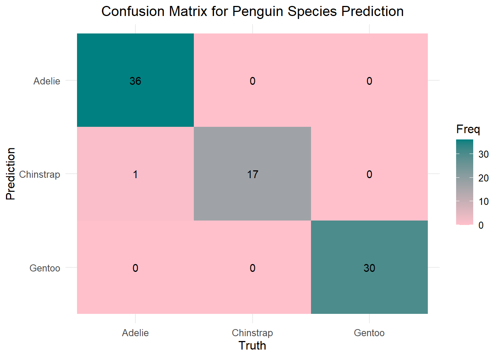

library(tidymodels)
library(palmerpenguins)
library(dplyr)
library(ggplot2)Classification Model
Here we’ll create a classification model that predicts the species of a penguin based on its other attributes.
Prepare the Data
First, load the necessary libraries:
Next, we examine the penguin data and preparing it for modeling.
data(penguins)
penguins <- drop_na(penguins)
glimpse(penguins)Rows: 333
Columns: 8
$ species <fct> Adelie, Adelie, Adelie, Adelie, Adelie, Adelie, Adel…
$ island <fct> Torgersen, Torgersen, Torgersen, Torgersen, Torgerse…
$ bill_length_mm <dbl> 39.1, 39.5, 40.3, 36.7, 39.3, 38.9, 39.2, 41.1, 38.6…
$ bill_depth_mm <dbl> 18.7, 17.4, 18.0, 19.3, 20.6, 17.8, 19.6, 17.6, 21.2…
$ flipper_length_mm <int> 181, 186, 195, 193, 190, 181, 195, 182, 191, 198, 18…
$ body_mass_g <int> 3750, 3800, 3250, 3450, 3650, 3625, 4675, 3200, 3800…
$ sex <fct> male, female, female, female, male, female, male, fe…
$ year <int> 2007, 2007, 2007, 2007, 2007, 2007, 2007, 2007, 2007…We split the data into training and testing sets.
set.seed(123)
penguin_split <- initial_split(penguins, prop = 0.75, strata = species)
penguin_train <- training(penguin_split)
penguin_test <- testing(penguin_split)Define the Model
We use a multinomial logistic regression model for this multi-class classification problem, utilizing the tidymodels framework.
multinom_spec <- multinom_reg() %>%
set_engine("nnet") %>%
set_mode("classification") %>%
set_args(trace = FALSE) The recipe specifies how the model variables should be processed, including dummy encoding for categorical variables and normalization for numeric variables.
penguin_recipe <- recipe(species ~ ., data = penguin_train) %>%
step_dummy(all_nominal(), -all_outcomes()) %>%
step_zv(all_predictors()) %>%
step_normalize(all_numeric(), -all_outcomes())Combine the recipe and model specification into a workflow.
penguin_workflow <- workflow() %>%
add_model(multinom_spec) %>%
add_recipe(penguin_recipe)Fit the Model
We’ll train the model on the training data.
penguin_fit <- fit(penguin_workflow, data = penguin_train)Model Evaluation
We will evaluate the model’s performance on the test set.
penguin_results <- augment(penguin_fit, new_data = penguin_test)
penguin_results %>%
conf_mat(truth = species, estimate = .pred_class) %>%
autoplot(type = "heatmap")
Here we calculate accuracy and other relevant metrics.
accuracy <- penguin_results %>%
accuracy(truth = species, estimate = .pred_class)
accuracy# A tibble: 1 × 3
.metric .estimator .estimate
<chr> <chr> <dbl>
1 accuracy multiclass 0.988sensitivity <- penguin_results %>%
sensitivity(truth = species, estimate = .pred_class, event_level = "second")
sensitivity# A tibble: 1 × 3
.metric .estimator .estimate
<chr> <chr> <dbl>
1 sensitivity macro 0.991specificity <- penguin_results %>%
specificity(truth = species, estimate = .pred_class, event_level = "second")
specificity# A tibble: 1 × 3
.metric .estimator .estimate
<chr> <chr> <dbl>
1 specificity macro 0.995Conclusion
Based on our metrics, our model performs very well on the test set. Other ways to explore this could be to utilize trees or other modeling methods; however with our model, we have a high accuracy, sensitivity, and specificity. Well done exploring and modeling this awesome penguin dataset!